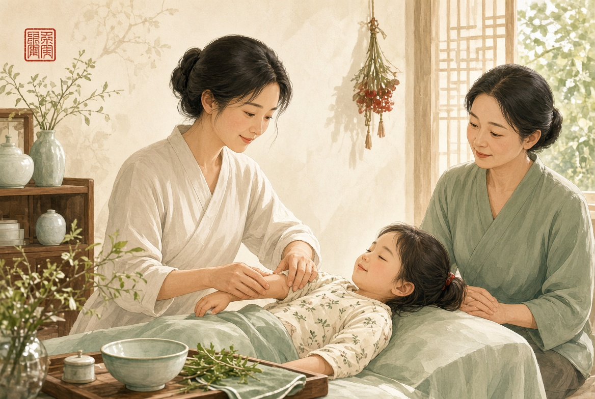
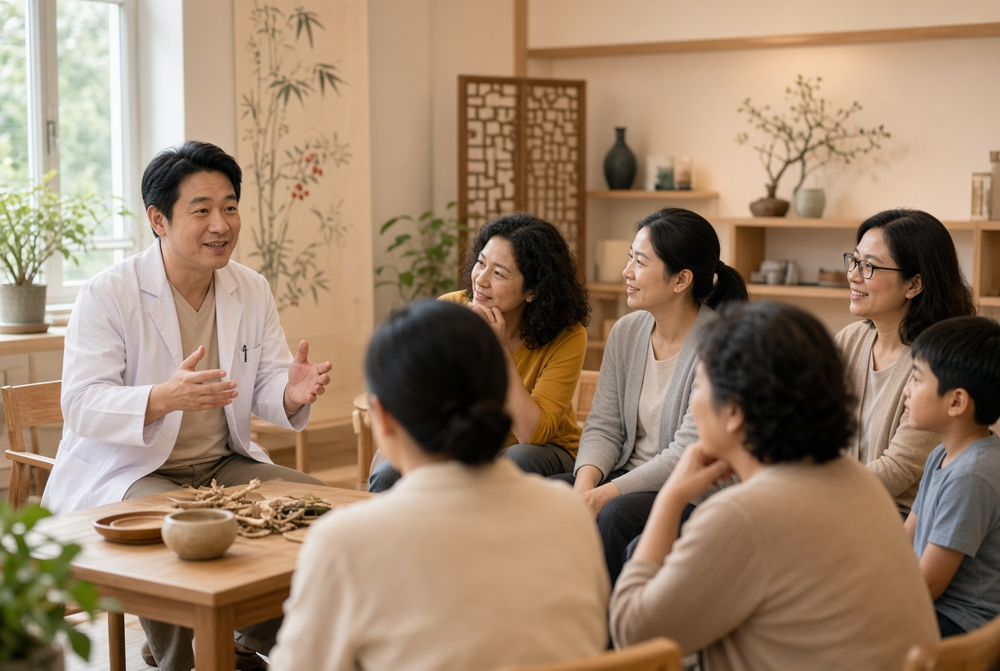
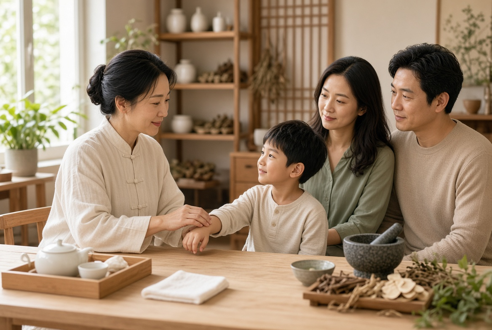
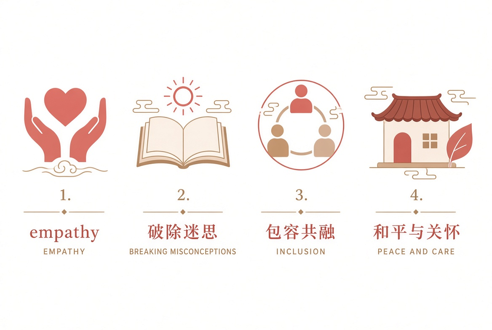

讓每一個生命，都有健康成長、被理解與融入社會的機會。
我們積極走進社區與校園，以專業中醫知識推動健康教育，同時推廣 SEN 相關資訊，拆解誤解，促進共融。


如果您是學校、機構或社區組織負責人，歡迎與我們聯繫，共同推動更友善、更健康的社區。
WhatsApp 查詢社區合作以註冊中醫師專業為基礎，提供溫和、個人化及以家庭為本的中醫支援。歡迎查詢。
針對特殊教育需要兒童的體質評估、兒童推拿、穴位調理、食療建議及日常生活指導，協助家庭建立適合孩子的照護方式。
溫和手法，改善脾胃、睡眠、情緒波動及體質偏弱等常見問題，適合不同成長節奏的孩子。
細心聆聽、專業辨證，按每位孩子及家長的實際情況，提供持續可實行的健康支援。
為社區市民提供專業、溫和及普惠的中醫診療與健康指導，守護每一個家庭的健康。
所有服務詳情及安排，歡迎透過 WhatsApp 查詢，我們會耐心了解您的需要。
WhatsApp 查詢服務老少平安社會企業有限公司（Ping On Care Social Enterprise Ltd.）以中醫養護為專業核心、以社會共融為初心，致力於把醫療服務從單純「處理疾病」延伸至「支持成長、陪伴家庭、連結社區」。
我們專注支援 SEN 特殊教育需要兒童及其家庭，同時為社區市民提供專業、溫和及普惠的中醫診療與健康指導。
我們以醫療守護健康，以教育消除誤解，以社區行動推動共融，讓每一個人都能被理解、被接納，健康成長。

以同理心對待每一位服務對象
以科普消除偏見，讓差異被理解
以行動建立更平等、包容與友善的社區
以專業守護身心健康，陪伴每個家庭前行
老少平安的名字，承載著一份簡單而深遠的願望：
願老有所安，少有所護；
願每一個家庭都能在健康與理解中前行；
願每一位 SEN 孩子都能被看見、被接納，並在適合自己的道路上發光發熱。
老少平安，願我們與每一個家庭同行，讓世界每一個人都更健康、更快樂。
立即 WhatsApp 聯絡我們